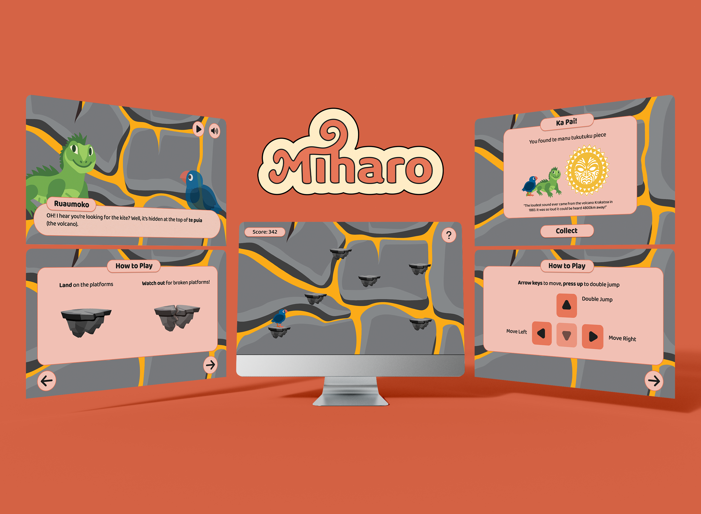
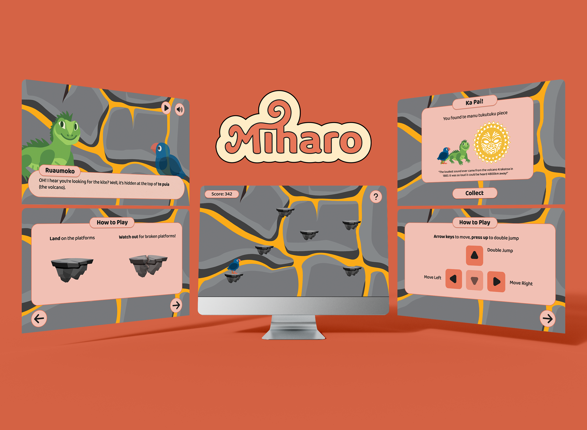

Mīharo
2025
Mīharo PrototypeMīharo Final Presentation
TOOLS
Figma | Photoshop | Illustrator
TEAM
Jefritz Espino - Project Manager | UX/UI Designer | Creative Director
Page Aysha Hodge - Graphic Designer | Lead Researcher
Yunho Ha - Motion Designer | Illustrator
Zak Alexander - Developer | UX Designer
SKILLS
Project Management | Storytelling | UX Design | UI Design | Prototyping
BRIEF
This was a project working with Auckland Museum to design a web-based experience that lets children and families explore and engage with the Weird and Wonderful Exhibition beyond the physical space.
SOLUTION
We created a an emotional narrative game about a Takahē who looks to the Māori gods for help as she wants the ability to fly. It invites storytelling, education, interactivity with Te Ao Māori.
CONTRIBUTION
As a Project Manager, I ensured that our team's goals were met each week, that we were holding daily standups and that tasks were delegated. As the Creative Director, I ensured that all visual collateral was cohesive and represented our brand well. For this project, I created all the prototyping, story narrative, and dialogue of each character.
STORYTELLING
When creating the story, it was important to create a narrative that engaged our tamariki and helped them learn through play. The story was easy to follow with one clear goal: Helping the Takahe to fly. This ensured that our tamariki would not be confused. Our storytelling incorporated Te Ao Māori with the Weird and Wonderful exhibition to further include Auckland Museum's values.


UI DESIGN
Consistency and cohesiveness were an important part of our project. We needed to ensure that our UI was all consistent; therefore, I created a simple design system to help us keep consistent when it came to designing and developing the interactive experience. It was also important for our UI to contrast well with the background so that the children could easily spot any buttons they needed to press.

ACCESSIBILITY
We highly valued accessibility when it came to this project; therefore, we designed the experience for a range of devices: iPad, desktop and phone. Alongside this, we had voiceovers for every dialogue with the option of replaying dialogue, to cater to children who have difficulty reading. The dialogue was simple, straightforward and included simple Māori words to enhance learning. We wanted our project to be accessible to a range of children.
DESIGNING FOR KIDS
Since our project was targeted towards kids, our UI, tutorials and games had to be simple, engaging, easy to understand and fun. This is so that the children will want to play and will not get frustrated if the games are too challenging. We wanted the tamariki to have fun, direct the game, but still feel accomplished after playing the game. We wanted the games to be revisited and replayable, therefore, we made the games fun and straightforward for the children to want to come back to the website.
 

Feel free to try out Takahe's journey for yourself! Turn your sound on and make it fullscreen for the best experience. P.S. the games do not work on this prototype, so you can click through these screens.